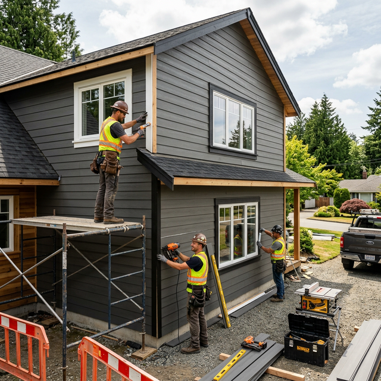

Your front door is the focal point of your home's exterior. In the charming towns of Paris and St. George, homeowners are increasingly opting for fiberglass and steel entry systems that offer the look of real wood without the maintenance headaches.

1. The Rise of Modern Farmhouse Aesthetics
The "Modern Farmhouse" look remains a top choice in St. George. We're seeing a high demand for black or dark charcoal entry doors with large glass panes and minimalist hardware. These doors provide a clean, high-contrast look that works perfectly with both new builds and renovated historic homes.
2. Advanced Multi-Point Locking Systems
Security is a top priority for Paris residents. Modern doors now come standard with multi-point locking systems that secure the door at the top, middle, and bottom with a single turn of the key. This not only improves safety but also creates a tighter seal against drafts.
Enhance Your Curb Appeal
Looking for a door that makes a statement? Apex Windows & Exteriors offers custom entry door solutions for Paris and St. George homeowners.
View Our Door Gallery